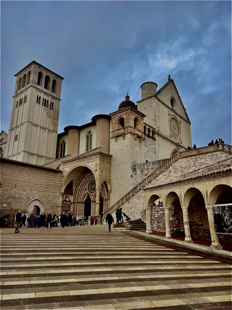
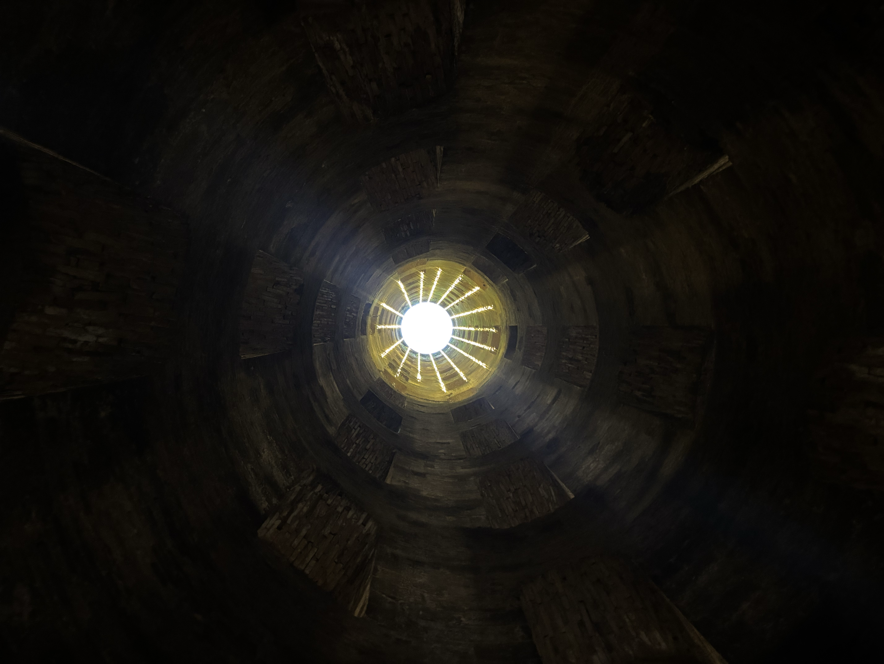
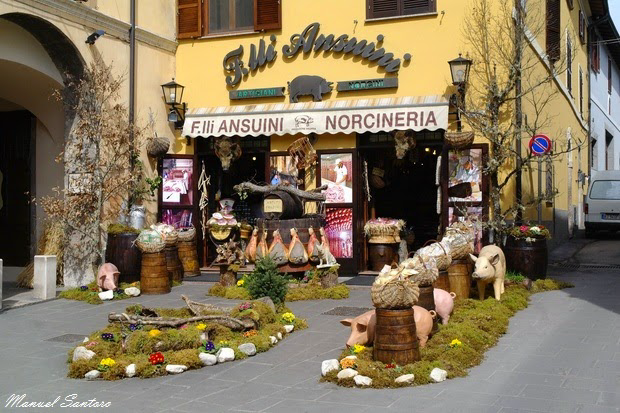
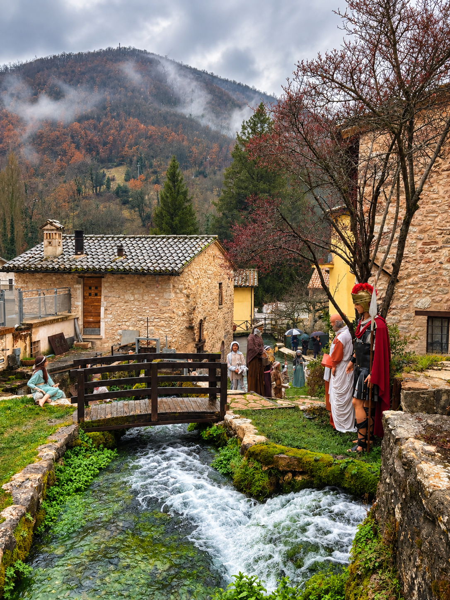

Quattro giorni tra borghi, città, strade interne e deviazioni nel cuore verde d'Italia.
Questo è il percorso che abbiamo seguito davvero, con qualche modifica rispetto al programma iniziale. Abbiamo scelto spesso le strade interne invece dei percorsi più veloci: richiedono un po' più di tempo, ma permettono di godersi molto di più i paesaggi del cuore verde d'Italia. Non è una lista di cose da spuntare, ma il racconto di un piccolo road trip tra Umbria e una deviazione nelle Marche.
Appena arrivati all'aeroporto di Perugia non siamo andati direttamente in città: abbiamo ritirato l'auto e iniziato il viaggio da Assisi.
Basilica di San Francesco, Piazza del Comune, Tempio di Minerva e le vie del centro sono perfetti per una prima passeggiata. Se hai più tempo, puoi allungarti anche verso la Rocca Maggiore o l'Eremo delle Carceri.

Da Assisi ci siamo poi spostati a Perugia, dove abbiamo concluso la giornata tra Rocca Paolina, Corso Vannucci, Fontana Maggiore, Palazzo dei Priori e il centro storico.
Il secondo giorno è quello con più strada. Da Perugia siamo partiti verso il Lago Trasimeno, fermandoci a Castiglione del Lago per una passeggiata tra la Rocca e il lungolago.
Da lì abbiamo proseguito per Città della Pieve, un borgo che si gira bene senza fretta, prima di continuare verso Orvieto.

A Orvieto abbiamo dedicato tempo al centro e al Pozzo di San Patrizio, una delle visite che inserirei di nuovo senza dubbi.
Nel programma avevamo poi le Cascate delle Marmore. Alla fine non siamo riusciti a vederle: pioveva e gli orari indicati per l'apertura del flusso d'acqua non sempre vengono rispettati. Le terrei comunque nell'itinerario, controllando le informazioni aggiornate prima di partire e lasciando un po' di margine.
La giornata si conclude a Narni, nostra tappa per la notte.
Da Narni ci siamo spostati verso Norcia. È una tappa che inserirei soprattutto per l'atmosfera e per quello che si mangia: entrare in una delle tipiche norcinerie e assaggiare i salumi locali fa parte dell'esperienza.
Prima di ripartire, per me c'è una cosa da fare assolutamente: un buon panino con la porchetta e, se li trovi, un assaggio di ciccioli di maiale.

Se hai più tempo, da Norcia continuerei fino a Castelluccio di Norcia: il paesaggio merita la deviazione. È anche una zona profondamente segnata dal terremoto del 2016 e ancora oggi non tutto ha recuperato la propria bellezza originaria.
Vallecchia e Acquasanta Terme per noi avevano soprattutto un legame affettivo, quindi non le considererei tappe indispensabili per chi ripete questo itinerario.
Da Acquasanta abbiamo fatto anche un salto ad Ascoli Piceno. È una bella città e, trovandosi già in zona, merita una passeggiata tra Piazza del Popolo e il centro; nel nostro caso l'abbiamo inserita soprattutto perché dormivamo ad Acquasanta.
L'ultimo giorno, tornando da Acquasanta verso l'aeroporto di Perugia, ci siamo fermati a Rasiglia.
È un borgo molto piccolo, attraversato dall'acqua, ma proprio per questo suggestivo e caratteristico: una pausa piacevole da inserire lungo la strada senza trasformarla in una giornata piena di tappe.

Per questo itinerario l'auto è ciò che rende possibile collegare borghi, città e deviazioni senza dipendere dagli orari dei mezzi.
Non scegliere sempre il percorso più veloce. Quando i tempi lo permettono, le strade interne sono uno dei modi migliori per godersi il paesaggio umbro.
Noi non siamo riusciti a visitarle per pioggia e orari del rilascio dell'acqua. Controlla le informazioni aggiornate e non costruire una giornata troppo rigida intorno a un solo orario.
Lascia spazio anche al cibo: norcinerie, salumi, porchetta e ciccioli sono una parte del viaggio, non soltanto una pausa tra una visita e l'altra.
La connessione può essere scarsa. Salva o controlla prima la strada per ripartire e rientrare sulla direttrice principale.
È il viaggio che abbiamo fatto davvero, con tappe cambiate rispetto al programma iniziale e deviazioni legate anche a motivi personali.
Quattro giorni possono cambiare molto in base al periodo, al ritmo che vuoi tenere e alle tappe che ti interessano di più. Questo percorso può essere accorciato, allungato o usato semplicemente come punto di partenza per costruirne uno tuo.
Costruiamo il tuo viaggio →